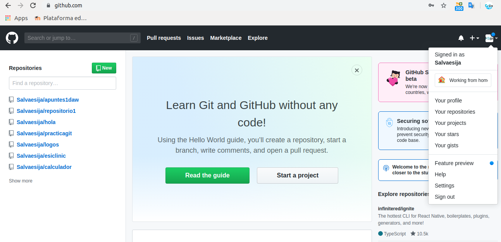
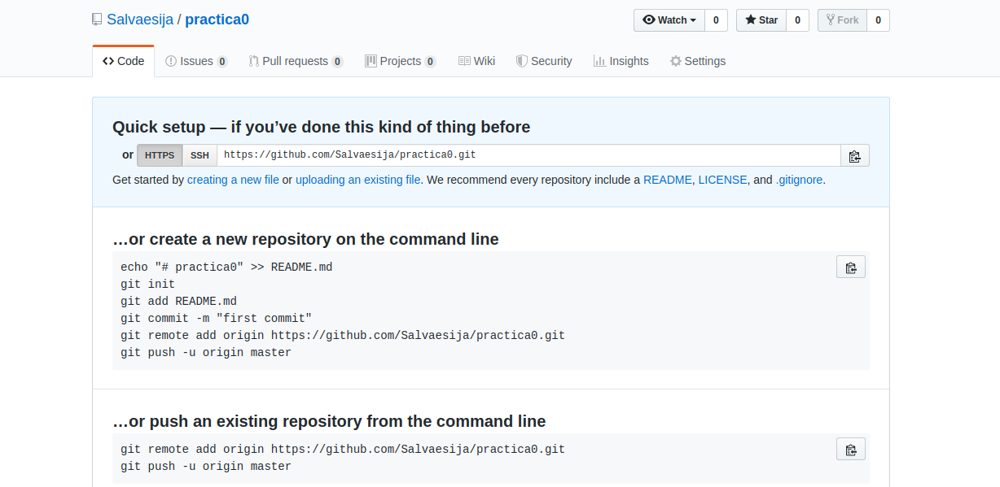
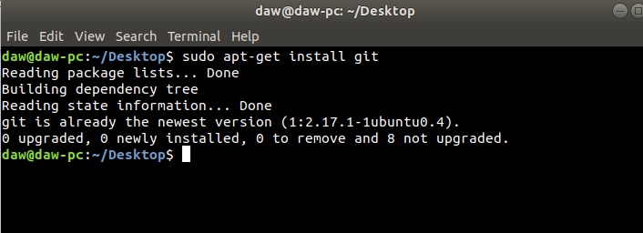
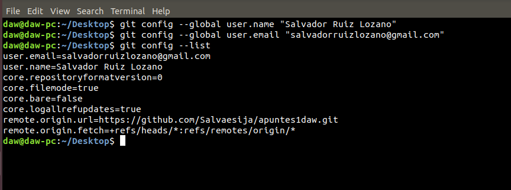
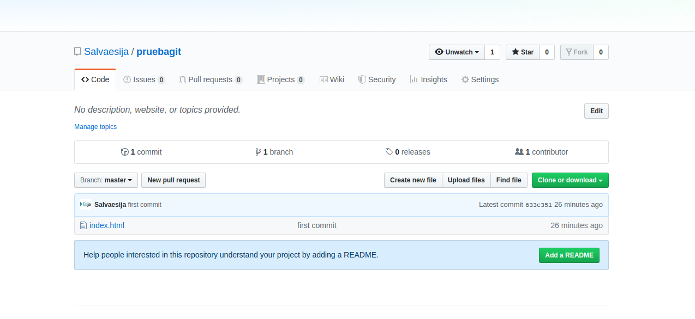
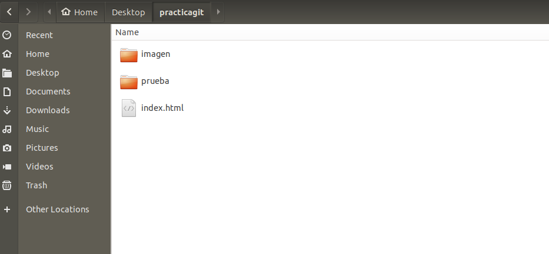
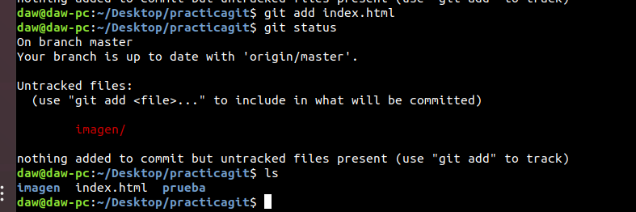
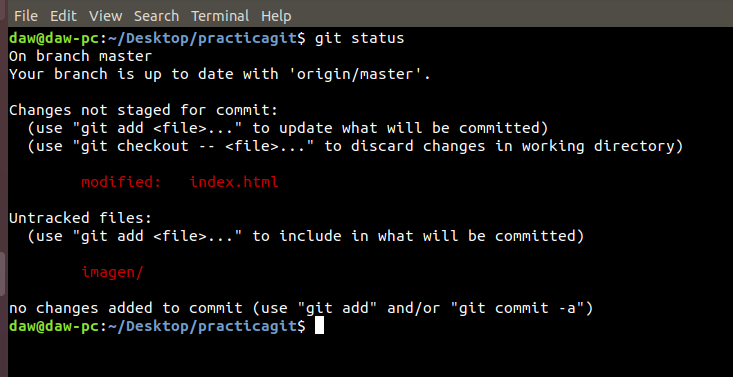
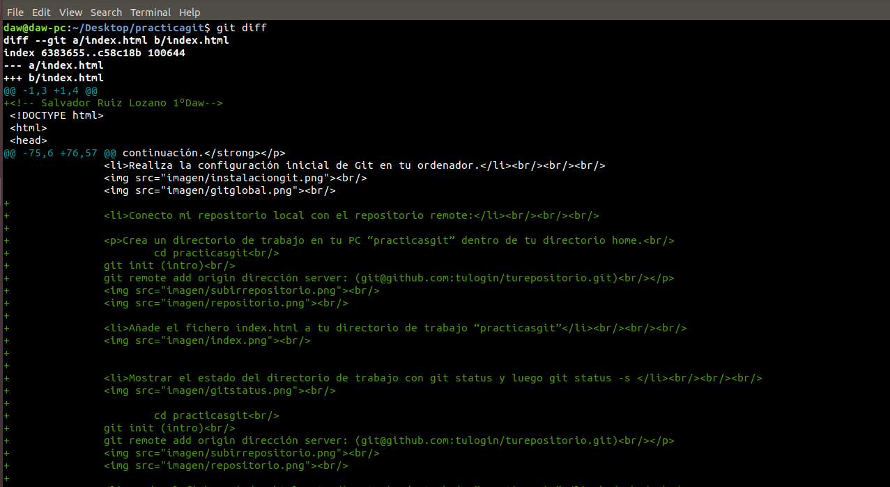
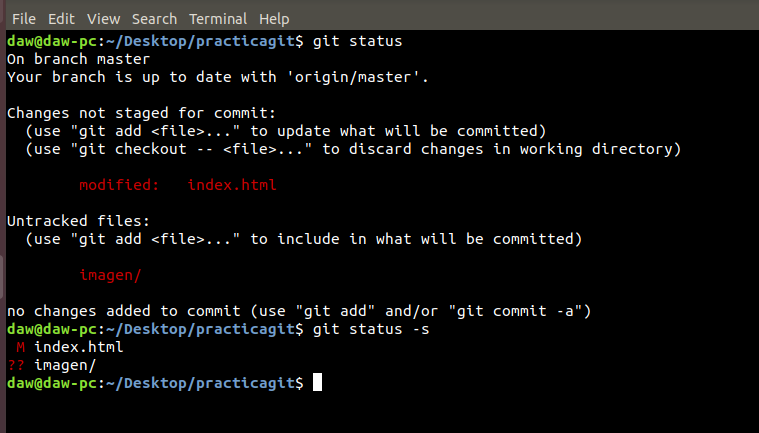

Acerca del control de versiones
¿Qué es el control de versiones, y por qué debería importarte? El control de versiones es un sistema que registra los cambios realizados sobre un archivo o conjunto de archivos a lo largo del tiempo, de modo que puedas recuperar versiones específicas más adelante. A pesar de que los ejemplos de este libro muestran código fuente como archivos bajo control de versiones, en realidad cualquier tipo de archivo que encuentres en un ordenador puede ponerse bajo control de versiones.
Si eres diseñador gráfico o web, y quieres mantener cada versión de una imagen o diseño (algo que sin duda quieres), un sistema de control de versiones (Version Control System o VCS en inglés) es una elección muy sabia. Te permite revertir archivos a un estado anterior, revertir el proyecto entero a un estado anterior, comparar cambios a lo largo del tiempo, ver quién modificó por última vez algo que puede estar causando un problema, quién introdujo un error y cuándo, y mucho más. Usar un VCS también significa generalmente que si fastidias o pierdes archivos, puedes recuperarlos fácilmente. Además, obtienes todos estos beneficios a un coste muy bajo.
- Sistemas de control de versiones locales
- Sistemas de control de versiones centralizados
- Sistemas de control de versiones distribuidos
Un método de control de versiones usado por mucha gente es copiar los archivos a otro directorio (quizás indicando la fecha y hora en que lo hicieron, si son avispados). Este enfoque es muy común porque es muy simple, pero también tremendamente propenso a errores. Es fácil olvidar en qué directorio te encuentras, y guardar accidentalmente en el archivo equivocado o sobrescribir archivos que no querías.

El siguiente gran problema que se encuentra la gente es que necesitan colaborar con desarrolladores en otros sistemas. Para solventar este problema, se desarrollaron los sistemas de control de versiones centralizados (Centralized Version Control Systems o CVCSs en inglés). Estos sistemas, como CVS, Subversion, y Perforce, tienen un único servidor que contiene todos los archivos versionados, y varios clientes que descargan los archivos desde ese lugar central.

Es aquí donde entran los sistemas de control de versiones distribuidos (Distributed Version Control Systems o DVCSs en inglés). En un DVCS (como Git, Mercurial, Bazaar o Darcs), los clientes no sólo descargan la última instantánea de los archivos: replican completamente el repositorio. Así, si un servidor muere, y estos sistemas estaban colaborando a través de él, cualquiera de los repositorios de los clientes puede copiarse en el servidor para restaurarlo.

Git es un sistema de control de versiones distribuido. Git fue impulsado por Linus Torvalds y el equipo de desarrollo del Kernel de Linux. Ellos estaban usando otro sistema de control de versiones de código abierto, que ya por aquel entonces era distribuido. Todo iba bien hasta que los gestores de aquel sistema de control de versiones lo convirtieron en un software propietario. Lógicamente, no era compatible estar construyendo un sistema de código abierto, tan representativo como el núcleo de Linux, y estar pagando por usar un sistema de control de versiones propietario. Por ello, el mismo equipo de desarrollo del Kernel de Linux se tomó la tarea de construir desde cero un sistema de versionado de software, también distribuido, que aportase lo mejor de los sistemas existentes hasta el momento.
Así nació Git, un sistema de control de versiones de código abierto, relativamente nuevo que nos ofrece las mejores características en la actualidad, pero sin perder la sencillez y que a partir de entonces no ha parado de crecer y de ser usado por más desarrolladores en el mundo. A los programadores nos ha ayudado a ser más eficientes en nuestro trabajo, ya que ha universalizado las herramientas de control de versiones del software que hasta entonces no estaban tan popularizadas y tan al alcance del común de los desarrolladores.
Git es multiplataforma, por lo que puedes usarlo y crear repositorios locales en todos los sistemas operativos más comunes, Windows, Linux o Mac. Existen multitud de GUIs (Graphical User Interface o Interfaz de Usuario Gráfica) para trabajar con Git a golpe de ratón, no obstante para el aprendizaje se recomienda usarlo con línea de comandos, de modo que puedas dominar el sistema desde su base, en lugar de estar aprendiendo a usar un programa determinado.
Para usar Git debes instalarlo en tu sistema. Hay unas instrucciones distintas dependiendo de tu sistema operativo, pero en realidad es muy sencillo. La página oficial de descargas está en gitscm.com.
Allí encontrarás para descarga lo que se llama la "Git Bash" es decir, la interfaz de Git por línea de comandos. Tienes que descargar aquella versión adecuada para tu sistema (o si estás en Linux instalarla desde los repositorios dependiendo de tu distribución). Aparte de Windows, Linux o Mac, también hay versión para Solaris. La instalación es muy sencilla, lo que resulta un poco más complejo al principio es el uso de Git. No obstante, en futuros artículos podremos ver cuáles son los primeros pasos con Git y veremos que para realizar unas cuantas funciones básicas el manejo resulta bastante asequible para cualquier persona. Otra cosa es dominar Git, para lo cual te hará falta más tiempo y esfuerzo.
Sobre Github
Como se ha dicho, Github github.com es un servicio para alojamiento de repositorios de software gestionados por el sistema de control de versiones Git. Por tanto, Git es algo más general que nos sirve para controlar el estado de un desarrollo a lo largo del tiempo, mientras que Github es algo más particular: un sitio web que usa Git para ofrecer a la comunidad de desarrolladores repositorios de software. En definitiva, Github es un sitio web pensado para hacer posible el compartir el código de una manera más fácil y al mismo tiempo darle popularidad a la herramienta de control de versiones en sí, que es Git.
Nota: Queremos agradecer a Alejandro Morales de Honduras, estas explicaciones sobre Github en el hangout donde estuvo con nosotros como ponente. Su perfil de Github es github.com/alejandro.
Cabe destacar que Github es un proyecto comercial, a diferencia de la herramienta Git que es un proyecto de código abierto. No es el único sitio en Internet que mantiene ese modelo de negocio, pues existen otros sitios populares como Bitbucket que tienen la misma fórmula. No obstante, aunque Github tenga inversores que inyectan capital y esté movido por la rentabilidad económica, en el fondo es una iniciativa que siempre ha perseguido (y conseguido) el objetivo de hacer más popular el software libre. En ese sentido, en Github es gratuito alojar proyectos Open Source, lo que ha posibilitado que el número de proyectos no pare de crecer, y en estos momentos haya varios millones de repositorios y usuarios trabajando con la herramienta.
Pero ojo, para no llevarnos a engaño, al ser Git un sistema de control de versiones distribuido, no necesito Github u otro sitio de alojamiento del código para usar Git. Simplemente con tener Git instalado en mi ordenador, tengo un sistema de control de versiones completo, perfectamente funcional, para hacer todas las operaciones que necesito para el control de versiones. Claro que usar Github nos permite muchas facilidades, sobre todo a la hora de compartir código fuente, incluso con personas de cualquier parte del mundo a las que ni conoces.
Esa facilidad para compartir código del repositorio alojado en la nube con Gitgub y la misma sencillez que nos ofrece el sistema de control de versiones Git para trabajar, ha permitido que muchos proyectos Open Source se hayan pasado a Github como repositorio y a partir de ahí hayan comenzado a recibir muchas más contribuciones en su código.
Quizás te estés preguntando ¿cómo obtienen dinero en Github si alojar proyectos en sus repositorios es gratis? Realmente solo es gratuito alojar proyectos públicos, de código abierto. El servicio también permite alojar proyectos privados y para ello hay que pagar por una cuenta comercial o un plan de hosting que no es gratuito. Existen planes iniciales, para alojar hasta cinco proyectos privados a partir de 7 dólares por mes, lo que resulta bastante barato. Ese mismo plan es gratuito para los estudiantes universitarios.
Github además se ha convertido en una herramienta para los reclutadores de empleados, que revisan nuestros repositorios de Github para saber en qué proyectos contribuimos y qué aportaciones hemos realizado. Por ello, hoy resulta importante para los programadores no solo estar en Github sino además mantener un perfil activo.
Conclusión
Esperamos que esta introducción al mundo de los sistemas de control de versiones te haya interesado y te haya ayudado a aclarar diversos conceptos. En futuros artículos os explicaremos otros detalles que tienen que ver con el uso de estos sistemas para versionar nuestro software. Si quieres acceder a formación especializada no dejes de consultar el Curso de Git completo, intensivo y profesional que comenzamos en EscuelaIT.
Hemos hecho el registro y hemos entrado con el usuario y contraseña que hemos creado.Nota: el registro ya lo hice el año pasado.
Hemos creado el repositorio practica0.


Crea un directorio de trabajo en tu PC “practicasgit” dentro de tu directorio home.
cd practicasgit
git init (intro)
git remote add origin dirección server: (git@github.com:tulogin/turepositorio.git)






